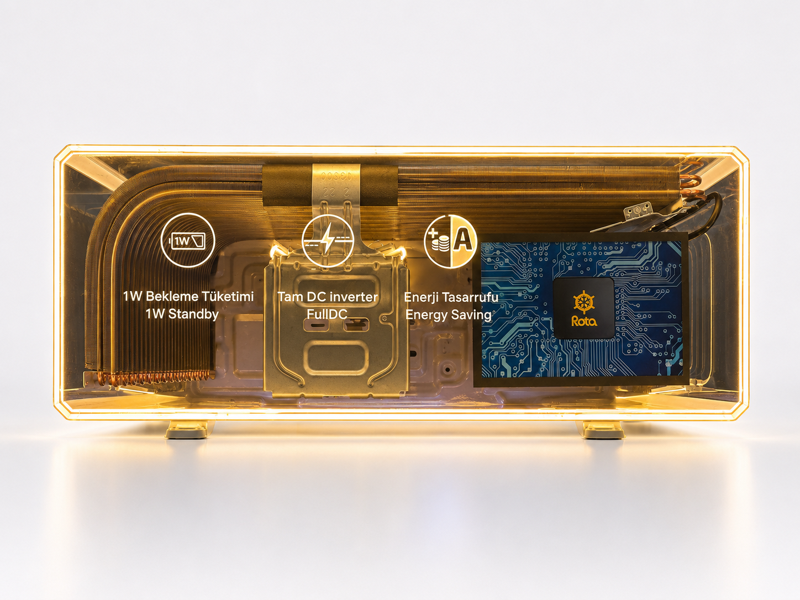
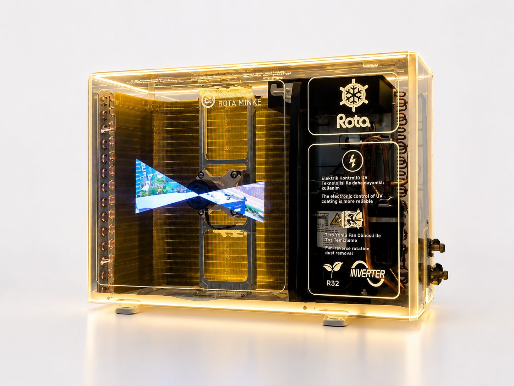
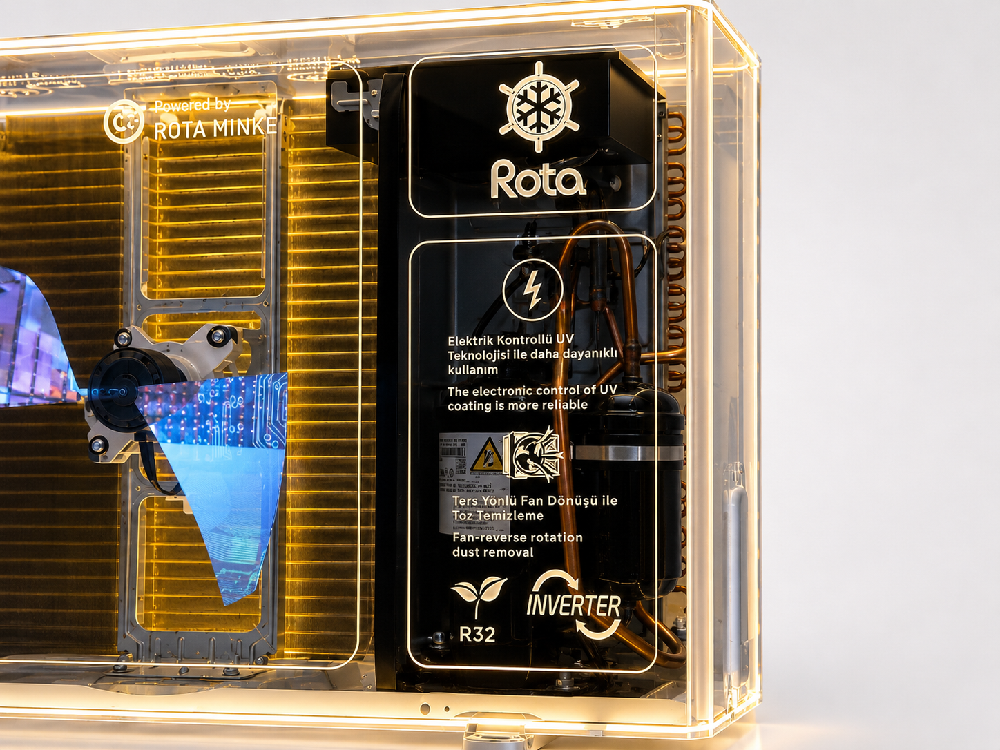
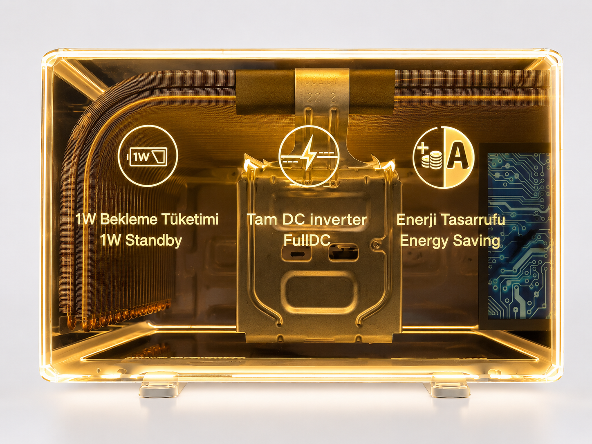

Rota HVAC Transparent Demo Display
A technical product becomes easier to understand when its inner logic, motion and value points are made visible inside one clean illuminated object.
The Rota HVAC Transparent Demo Display is a custom demonstration prop designed and manufactured by REYI. A clear acrylic enclosure, integrated warm lighting and visible interior components turn HVAC technology into a readable retail story. The result is a compact display system that helps customers see airflow logic, energy-saving features and branded engineering details in a format that feels premium, organized and rollout-ready.
The overall display presents technology clearly while keeping the outer form calm and premium
This front-facing product view shows how the display balances technical visibility and retail clarity. The transparent case exposes the interior layout, while the illuminated perimeter and neat graphic overlays create a branded frame for the story. Coils, control features and the information screen are all readable without turning the object into a cluttered engineering sample, which makes the prop suitable for showroom presentation as well as international rollout.

Four coordinated decisions turn a technical sample into a clean display experience
Transparent Construction
The acrylic enclosure reveals the internal architecture directly, helping customers understand the product without needing long explanation panels.
Visible Motion & Structure
The display makes the fan zone, coil layout and core components visually accessible, so technical logic becomes part of the retail experience.
Lighting & Branding
Warm perimeter lighting, branded iconography and graphic text help the object feel polished while directing attention to key product benefits.
Rollout-Friendly Adaptation
The format can be customized in size, lighting, graphics, structure and packing to support rollout across stores, events and regional programs.
The product idea becomes clear through three controlled details

The three-quarter overall view clarifies the full object: transparent casing, warm lighting, internal motion and a structured branded zone all working together in one precise display volume.

The close-up of the brand and compressor section shows how information graphics, visible tubing and controlled transparency turn technical components into a clean customer-facing story.

The illuminated efficiency view brings the value message forward, using icons, visible structure and balanced framing to make standby power, inverter logic and energy saving easy to read.
Planning a transparent demo display for HVAC or appliance products?
Share the product category, target feature points, desired component visibility, store environment and rollout quantity with us. REYI can coordinate the acrylic structure, lighting, technical display logic, graphic overlays, packing and installation-ready fabrication. Programs can be ordered through a brand headquarters and delivered for use in markets worldwide.
- Display dimensions
- Key features to highlight
- Lighting requirements
- Brand graphics
- Quantity & market
- Delivery timeline